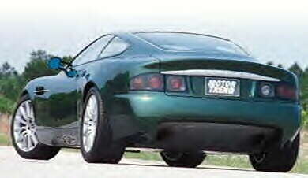

Aston Martin Project Vantage



Specs
Price |
N/A |
Top Speed |
200mph+ |
Acceleration |
|
Engine |
|
0-30mph |
N/A |
Type |
V12, 48valve DOHC |
0-60mph |
4.0sec |
Displacement |
6.0L |
0-100 |
N/A |
Power |
450hp@? |
1/4 mile |
N/A |
Torque |
N/A |
Weight |
N/A |
Handling |
|
Gas mileage |
20mpg |
Skidpad |
N/A |
City |
N/A |
600ft slalom |
N/A |
Highway |
N/A |
Powertrain |
Front engined, rear wheel drive, 6 speed manual |
(? = incomplete data or unverified info, N/A = info Not Available)
Beyond the specs:
Being an Aston Martin you can expect this prototype car to come with a very luxurious interior and supple ride, though this car is not yet finished it was planned to be a 200mph+, 400hp, 20mpg supercar. This shall be achieved with the use of a frame based off the DB7 and an all-new 6liter V12 engine. Few details are available at the time.
~Oracle